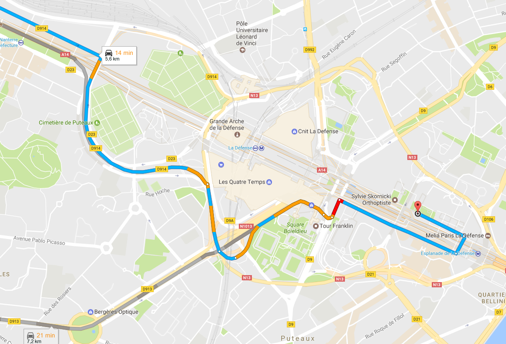
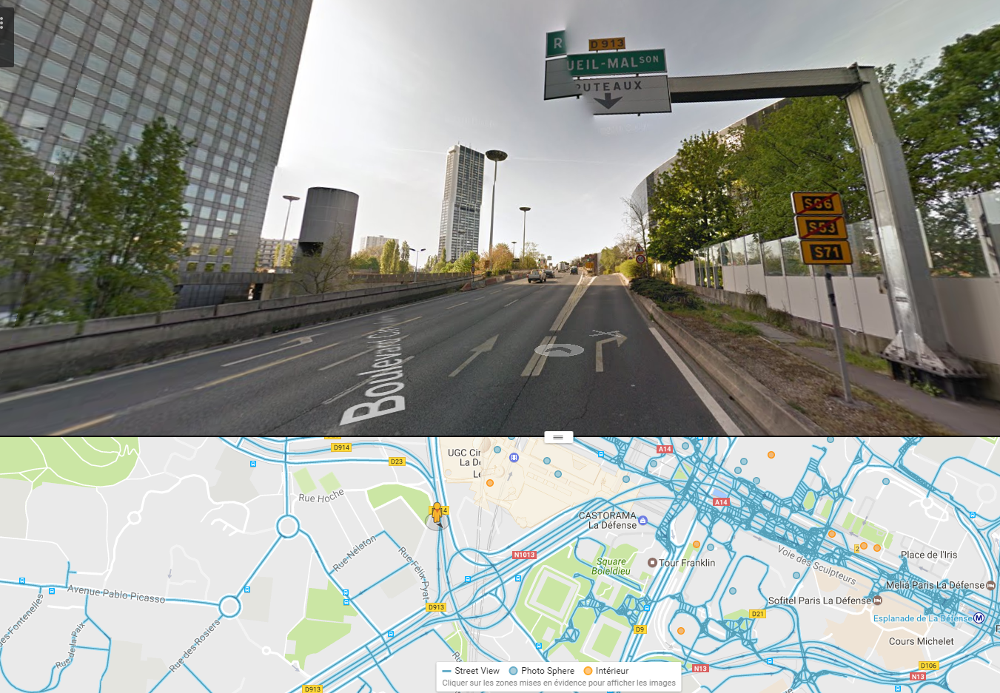
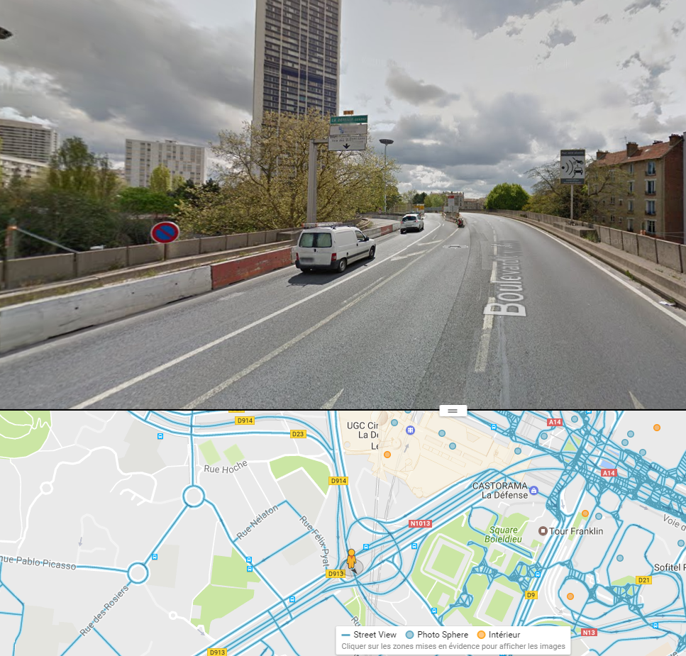

En voiture depuis Nanterre
Depuis Nanterre, vous passez sans doute par le boulevard circulaire.
-
Vous voyez le panneau Puteaux : ne sortez pas, continuez un peu et serrez à gauche.

-
Tournez à gauche en suivant le panneau La Défense Centre.

-
En passant par le marché des Bergères (Puteaux), vous continuez à suivre La Défense Centre.

Ensuite, prenez la Voie des Bâtisseurs pour arriver au 52.